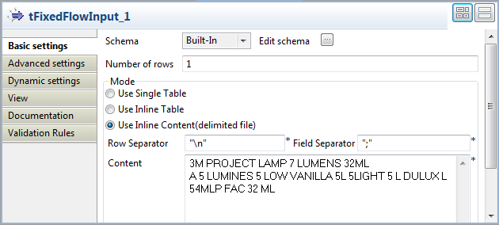
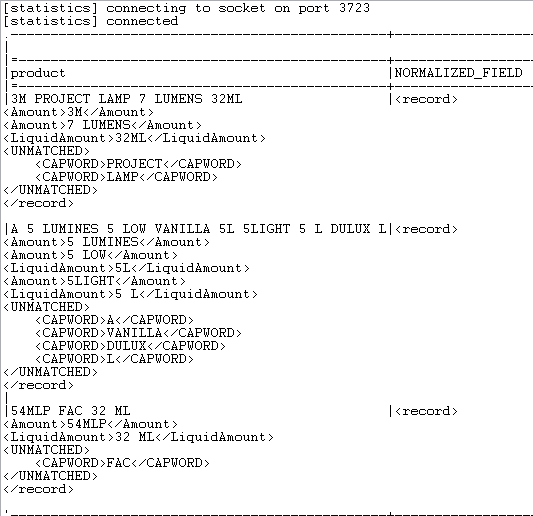

Avertissement
Ce composant est disponible dans la Palette du studio si vous avez souscrit à l'un des produits Talend Platform.
|
Famille de composant |
Data Quality | |
|
Fonction |
Le composant tStandardizeRow segmente le flux de données reçu du composant précédent et applique des règles personnalisées pour analyser les données. En se fondant sur cette analyse, ce composant normalise et écrit les données dans un flux de données XML séparé. Les balises XML utilisées sont celles définis par les noms des règles. L'option de standardisation ajoute une colonne supplémentaire au flux de sortie dans laquelle les données sont standardisées après normalisation. ANTLR est utilisé pour analyser et segmenter les données d’entrée. Pour plus d’informations, consultez le site http://www.antlr.org/ (en anglais). NoteCe composant ne modifie pas vos données brutes. | |
|
Objectif |
Le tStandardizeRow normalise les données d’entrée dans un flux de données XML distinct. Cela vous permet de séparer (et de standardiser si besoin) les données conformes à la règle des données non conformes. | |
|
Basic settings |
Schema et Edit schema |
Un schéma est une description de lignes, il définit le nombre de champs qui sont traités et passés au composant suivant. Le schéma est soit local (built-in) soit distant dans le Repository. |
|
|
|
Built-in : Le schéma est créé et conservé ponctuellement pour ce composant seulement. Voir également le Guide utilisateur de Talend Data Integration Studio. |
|
|
|
Repository : Le schéma existe déjà et est stocké dans le Repository. Ainsi, il peut être réutilisable dans divers projets et Job designs. Voir également le Guide utilisateur de Talend Data Integration Studio. |
|
|
Column to parse |
Sélectionnez la colonne à analyser à partir du flux de données reçu |
|
|
Standardize this field |
Cochez cette case pour standardiser les données identifiées comme conformes à la règle, c’est-à-dire remplacer les doublons de données identifiés par les données standardisées correspondantes à partir d’un index donné. Pour plus d’informations concernant l’index de ces données standardisées, consultez la section intitulée « tSynonymOutput ». NoteChaque fois que vous cochez ou décochez cette case, le schéma de ce composant est modifié automatiquement. De ce fait, dans un Job donné, vous devez cliquer sur le bouton Sync columns afin de régler les problèmes d’incohérence du schéma. |
|
|
Conversion rules |
Complétez ce tableau pour définir les règles que vous souhaitez appliquer. Les colonnes de la table à remplir sont : - Name : dans cette colonne, saisissez le nom que vous souhaitez utiliser. Ce nom est également utilisé comme nom balise pour les données de sortie en XML et comme nom de segment pour étiqueter les données d’entrée identifiées par cette règle. - Type : dans cette colonne, sélectionnez le type de la règle que vous souhaiter appliquer. Pour plus d’informations concernant les types de règles disponibles, consultez la section intitulée « Types de règles ». - Value : dans cette colonne, saisissez la règle que vous souhaitez définir.
NoteUne vue de test est fournie pour vous permettre de créer les analyseurs syntaxiques qui vous intéressent. Pour plus d'informations, consultez le Guide utilisateur de Talend Data Quality. |
|
|
Generate parser code in Routines |
Cliquez sur ce bouton pour permettre à l’analyseur de données de votre Studio de générer le code des règles définies dans le tableau Conversion rules.
NoteDans un Job donné, lorsqu’une règle est créée, cette opération est nécessaire pour son exécution. En revanche, si une simple modification est effectuée sur la règle existante, cette opération est nécessaire uniquement lorsque la règle modifiée est de type Enumeration, Format ou Combination. Pour plus d’informations concernant les types de règles, consultez la section intitulée « Types de règles » |
|
Advanced settings |
tStatCatcherStatistics |
Cochez cette case pour collecter les métadonnées de process du Job, aussi bien au niveau du Job qu’au niveau de chaque composant. |
|
Utilisation |
Ce composant est un composant intermédiaire. Il requiert des composants d’entrée et de sortie. Ce composant génère du code Java dans le nœud Routines du Repository. Ce code implémente la grammaire définie dans les règles. Il est compilé automatiquement pour être utilisé par le composant. Lorsque vous modifiez/ajoutez/supprimez une règle, le code doit être généré à nouveau, afin que le Job puisse prendre en compte les modifications et s’exécuter. Pour le générer, cliquez sur le bouton Generate parser code in Routines. | |
|
Connections |
|
Liens de sortie (d’un composant à un autre) : Row : Main; Reject Trigger : Run if; On Component Ok; On Component Error.
Liens d’entrée (d’un composant à un autre) : Row : Main; Reject
Pour plus d’informations concernant les connexions, consultez le Guide utilisateur de Talend Data Integration Studio. |
Les types de règles fournies sont divisées en deux groupes : les types de règles simples et les types de règles avancées.
Les types de règles simples sont : Enumeration, Format et Combination. Les règles de ce type se composent de certains symboles ANTLR donnés.
Les types de règles avancées sont : Regex, Index et Shape. Les règles de ce type correspondent aux données segmentées et standardisent ces données si nécessaire.
Note
Les règles de type avancé sont toujours exécutées après les règles spécifiques ANTLR. Aucun compte n'est tenu de leur ordre.
Pour plus d'informations concernant les règles simples et avancées, consultez la section intitulée « Différents types de règles pour différents niveaux de parsing » et la section intitulée « Scénario 3 : Utiliser deux niveaux de parsing pour extraire des informations de données non structurées ».
Pour créer les règles de tout type, Talend fourni les éléments suivants prédéfinis et sensibles à la casse (éléments ANTLR) pour définir la composition d'une chaîne de caractères à mettre en correspondance :
INT : integer (nombre entier),
WORD : word,
WORD+ : groupe de plusieurs mots,
CAPWORD : mot en majuscules,
DECIMAL : float décimal,
FRACTION : float fraction,
CURRENCY : devises,
ROMAN_NUMERAL : chiffres romains,
ALPHANUM : nombres alphanumériques (combinaison de caractères alphabétiques et numériques)
WHITESPACE : espace blanc,
UNDEFINED : chaînes de caractères non attendues, comme les codes ASCII qui ne sont reconnus par aucun autre élément.
Les trois tableaux suivants présentent successivement les informations détaillées concernant les types de règles simples, les types de règles avancées et les symboles ANTLR utilisés par les types de règles simples. Ces trois tableaux vous aident à compléter le tableau Conversion rules dans l’onglet Basic settings de ce composant.
Pour les types de règles simples :
|
Type de règle simple |
Utilisation |
Exemple |
Avertissement |
|---|---|---|---|
|
Enumeration |
Une règle de ce type fournit une liste de critères facultatifs. |
RuleName : |
- Chaque option doit être écrite entre guillemets doubles.
- Les options définies doivent être séparées par le symbole |.
- Le nom de la règle doit commencer par une majuscule. |
|
Format (Le nom de la règle commence par une majuscule) |
Une règle de ce type définit la composition d’une chaîne de caractères en spécifiant le type de chaque élément de cette chaîne. |
RuleName : |
- Seuls les types d’éléments pré-définis (les segments ANTLR) sont acceptés pour définir les éléments de chaîne de caractères. Ils sont sensibles à la casse : DIGIT, LETTER, CAPWORD, WORD, INT, ALPHANUM, DECIMAL, FRACTION, CURRENCY, ROMAN_NUMERAL. |
|
Format (Le nom de la règle commence par une minuscule) |
Une règle de ce type définit la composition d’une chaîne de caractères en spécifiant le type de chaque élément de cette chaîne. En plus des types d’élément prédéfinis, une règle Enumeration est applicable pour définir le type d’un élément d’une chaîne de caractères. |
RuleName : |
|
|
Combination |
Une règle de ce type définit la composition d’une chaîne de caractères en spécifiant le type de chaque élément de cette chaîne. Celle-ci utilise une règle Enumeration ou Format ou les deux. |
RuleNam e:
RuleValue : |
- Pour la règle Combination, le texte ou les caractères littéraux ne sont pas acceptés comme faisant partie de la valeur de la règle. Au besoin, vous devez créer une règle Enumeration pour définir ces textes ou ces caractères et utiliser ensuite cette règle à la place de la première. |
Avertissement
Tout caractère ou chaîne de caractères constant(e) (string literals), s’ils sont acceptés par un type de règle, doivent être placés entre guillemets simples. Autrement, ils seront traités comme des symboles grammaticaux ou des variables ANTLR et généreront des erreurs ou des résultats non souhaités lors de l’exécution.
Pour les types de règles avancées :
|
Type de règle avancée |
Utilisation |
Exemple |
Avertissement |
|---|---|---|---|
|
Regex |
Une règle de ce type utilise des expressions régulières pour mettre en correspondance les données entrantes segmentées par ANTLR. |
RuleName : |
Les expressions régulières doivent être compatibles avec Java. |
|
Index |
Une règle de ce type utilise un index de synonymes comme référence pour rechercher les données entrantes mises en correspondance. Pour plus d'informations concernant les index de synonymes disponibles, consultez l'annexe relative aux dictionnaires de synonymes de données, dans le Guide utilisateur de Talend Data Quality. Pour plus d'informations concernant les index de synonymes disponibles, consultez l'annexe concernant les dictionnaires des synonymes de données dans le Guide utilisateur de Talend Data Quality. |
Un scénario est disponible dans la section intitulée « Scénario 2 : Standardiser des adresses provenant de données non structurées ». |
- Sous Windows, les barres obliques inverses - Lorsque vous traitez un enregistrement, une règle Index met en correspondance la première chaîne de caractères identifiée comme correspondante. |
|
Shape |
Une règle de ce type utilise des segments pré-définis ainsi que des règles établies Regex ou Index ou les deux pour faire correspondre les données entrantes. |
RuleName : Cette règle correspond aux adresses telles que 12 main street, où StreetType est une règle Index que vous devez définir avec cette règle d’exemple dans la vue Basic settings de ce composant. Pour plus d’informations concernant le type de règle Shape, consultez la section intitulée « Scénario 2 : Standardiser des adresses provenant de données non structurées ». |
- Les segments pré-définis sont :
-
- -
- UNDEFINED pour les chaînes de caractères contenant des codes ASCII inattendus, qu’aucun autre segment ne peut reconnaître. - Seul le contenu placé entre |
Pour les symboles ANTLR donnés :
|
Symboles |
Signification |
|---|---|
|
|
alternative |
|
|
caractère littéral ou chaîne de caractères constante (string literal) |
|
|
1 ou plus |
|
|
0 ou plus |
|
|
facultatif ou prédicat sémantique |
|
|
ne correspond pas |
Les scénarios suivants présentent des exemples d’utilisation de ces symboles, mais vous pouvez également trouver d’autres exemples en consultant ce site :
Le composant tStandardizeRow utilise des règles simples basées sur la grammaire ANTLR et des règles avancées définies par Talend, non basées sur ANTLR.
Parfois, l'utilisation de règles ANTLR ne répond pas à toutes vos attentes lors de normalisation et de standardisation de données. Par exemple, si vous souhaitez extraire la quantité de liquide dans les enregistrements suivants :
3M PROJECT LAMP 7 LUMENS 32ML A 5 LUMINES 5 LOW VANILLA 5L 5LIGHT 5 L DULUX L 54MLP FAC 32 ML
Vous devez d'abord définir une unité pour les liquides et une quantité de liquides dans des règles d'analyse simples, comme suit :

Si vous testez ces règles dans la perspective Profiling du studio, vous pouvez constater que ces règles extraient 7 L de 7 LUMENS et que ce n'est pas ce que vous attendiez. Vous ne souhaitez pas que le mot LUMENS soit divisé en deux jetons.
Les règles simples définies précédemment sont des règles ANTLR d'analyse lexicale et sont
utilisées pour diviser en jetons la chaîne de caractères d'entrée. ANTLR ne fournit
pas de symbole de limite, comme le \b dans les expressions régulières.
Vous devez donc être prudent lors du choix de vos règles d'analyse lexicale, car
elles définissent comment sont divisées en jetons les chaînes d'entrée.
Vous pouvez résoudre ce problème en utilisant deux approches différentes :
La première approche est la définition d'une autre règle simple mettant en correspondance un mot et une valeur numérique, la règle Amount dans cet exemple :

La règle simple est une règle d'analyse syntaxique, une règle Format commençant par une majuscule. Si vous testez cette règle dans la perspective Profiling du studio, vous pouvez constater que les quantités non liquides sont mises en correspondance par cette règle. La règle LiquidAmount met en correspondance uniquement les séquences attendues de caractères.
La seconde approche consiste en une règle avancée telle une expression régulière et en la
définition d'une limite de mot avec \b. Vous pouvez utiliser un
analyseur lexical afin de diviser en jetons les quantités pour lesquelles vous
mettez en correspondance tout mot avec une valeur numérique. Utilisez une expression
régulière mettant en correspondance des quantités de liquide, comme suit : un
chiffre facultativement suivi d'un espace puis de L ou de ML et terminé par une
limite.
Notez que l'expression régulière va être appliquée sur les jetons créés par la règle d'analyse lexicale.
Vous ne pouvez vérifier les résultats de la règle avancée en testant la règle dans la perspective Profiling du studio comme vous le faites pour les règles simples. Cela signifie que le seul moyen de voir les résultats des règles avancées est de les utiliser dans un Job. Les résultats se présentent comme suit :
3M PROJECT LAMP 7 LUMENS 32ML <record> <Amount>3M</Amount> <Amount>7 LUMENS</Amount> <LiquidAmount>32ML</LiquidAmount> <UNMATCHED> <CAPWORD>PROJECT</CAPWORD> <CAPWORD>LAMP</CAPWORD> </UNMATCHED> </record>
Pour un exemple de Job concernant l'utilisation des règles ci-dessus, consultez la section intitulée « Scénario 3 : Utiliser deux niveaux de parsing pour extraire des informations de données non structurées ».
La première approche utilise uniquement la grammaire ANTLR et peut être plus efficace que la seconde, qui nécessite une seconde passe de parsing, afin de vérifier chaque jeton par rapport à l'expression régulière. Les expressions régulières permettent aux gens ayant une certaine connaissance de ces expressions de créer des règles plus avancées, qui ne pourraient pas vraiment être créées à l'aide d'ANTLR uniquement.
Dans ce scénario, deux étapes successives sont effectuées afin de :
normaliser les données entrantes (séparer les données conformes des données non conformes) ;
extraire les données souhaitées et les afficher.
Avant de reproduire ces étapes, vous devez analyser les données source afin de déterminer les règles à rédiger. Pour ce scénario, les données source sont stockées dans un fichier .csv appelé partsmaster.

Le fichier contient un total de 59 lignes de données brutes, mais certaines d’entre elles n’apparaissent pas sur la capture ci-dessus.
En observant les données, vous pouvez anticiper que la troisième ligne ne sera pas reconnue car elle contient des caractères asiatiques. De plus, vous pouvez déterminer que :
les données SKU contiennent 34-9923, pb710125, etc. De ce fait, la règle utilisée pour analyser les données SKU peut être :
Nom
Type
Valeur
“SKU”“Format”"(DIGIT DIGIT|LETTER LETTER'-'? DIGIT DIGIT DIGIT DIGIT (DIGIT DIGIT?)?"pour les données Size, le format correct est la multiplication de deux ou trois longueurs (length) ajoutée aux unités de longueur (length unit). De ce fait, les règles utilisées pour les données Size peuvent être :
Name
Type
Value
“LengthUnit”“Enumeration”“ 'm' | '\'' | 'inch' | 'inches' | '\"'”“BY”“Enumeration”“'X' | 'x' | 'by' ”“Length”“Format”“(INT | FRACTION | DECIMAL) WHITESPACE* LengthUnit ”“Size”“Combination”“Length BY Length BY Length”“Size”“Combination”“Length BY Length”
Puisque deux règles Combination utilisent le même nom, elles seront exécutées par ordre descendant comme présenté dans ce tableau.
pour les données Weight, le format correct est le poids (weight) ajouté à l’unité de poids (weight unit). De ce fait, les règles utilisées pour analyser les données Weight peuvent être :
Name
Type
Value
“WeightUnit”“Enumeration”“ 'lb' | 'lbs' | 'pounds' | 'Kg' | 'pinds'”“Weight”“Format”“(INT | FRACTION | DECIMAL) WHITESPACE* WeightUnit ”
Vous pouvez à présent commencer à reproduire les deux étapes de ce scénario.
Pour cette première étape, quatre composants sont utilisés :
un tFileInputDelimited (partsmaster) : ce composant charge et passe les données source au composant suivant.
un tStandardizeRow : ce composant normalise les données entrantes et rejette les exceptions non reconnues.
un tLogRow : ce composant est utilisé à deux reprises pour afficher respectivement les exceptions et les données XML de sortie.

Pour reproduire cette étape, procédez comme indiqué dans les sections suivantes.
Pour reproduire cette étape, procédez comme suit :
Configurez votre schéma File Delimited pour le fichier partsmaster.csv dans la vue Repository de votre Studio. Pour plus d’informations concernant cette procédure, consultez le Guide utilisateur de Talend Data Integration Studio.
Sous le nœud Metadata de la vue Repository de votre Studio, sélectionnez le schéma File Delimited de partsmaster.csv et déposez-le dans l’espace de modélisation graphique.
A partir de la boîte de dialogue qui apparaît, sélectionnez tFileInputDelimited.

Le composant tFileInputDelimited (partsmaster) s’affiche dans l’espace de modélisation graphique.
A partir de la Palette, déposez le composant tStandardizeRow ainsi que deux tLogRow dans l’espace de modélisation graphique.
Cliquez-droit sur le tFileInputDelimited (partsmaster) pour afficher son menu contextuel.
A partir de ce menu, sélectionnez un lien Row > Main pour connecter ce composant au tStandardizeRow.
Acceptez la propagation du schéma dans la boîte de dialogue qui apparaît en cliquant sur Yes.
A partir du tStandardizeRow, procédez de même pour connecter ce composant au premier tLogRow à l’aide d’un lien Row > Main et au second à l’aide d’un lien Row > Reject puis acceptez la propagation du schéma.
Note
Vous avez la possibilité de modifier le libellé de chaque composant, comme cela a été fait pour le composant tLogRow, renommé Exception pour ce scénario. Pour plus d’informations, consultez le Guide utilisateur de Talend Data Integration Studio .
Pour ce faire, procédez comme suit :
Cliquez sur le tStandardizeRow pour ouvrir l’onglet Basic settings de sa vue Component.

Dans le champ Column to parse, sélectionnez SKU_Description_Size_Weight. C’est l’unique colonne que contient le schéma d’entrée.
Sous le tableau Conversion rules, cliquez sur le bouton [+] à huit reprises pour ajouter huit lignes à ce tableau.
Pour remplir ces lignes, saisissez les règles déterminées lors de l’analyse des données brutes effectuée au début de ce scénario.
Note
Les deux règles Size sont exécutées par ordre descendant puisqu’elles font partie du même type de règle. Dans ce scénario, l'ordre des règles permet au composant de mettre d'abord en correspondance la règle Size composée de trois nombres puis celles de deux nombres. Si vous inversez cet ordre, le composant met en correspondance les deux premiers nombres avec la première règle Size (Length BY Length) et traite ensuite le dernier nombre de la chaîne est ignoré car il ne correspondant pas.
Cliquez sur le bouton Generate parser code in routines afin de générer le code d’analyse syntaxique dans des routines.
Appuyez sur F6 pour exécuter ce Job.
Dans la console de la vue Run, vous pouvez observer la structure des données de sortie.

Un segment XML correspondant aux données brutes telles que 34-9923, Monolithic Membrance, 4’ x 8’, 26 lbs est généré là où les données conformes sont séparées des données non conformes (qui ne correspondent pas). Les données brutes sont donc normalisées.
Toujours à partir de cette console, vous pouvez observer qu’une ligne est rejetée car elle contient des données non reconnaissables.

Cette section présente la deuxième étape de ce scénario. Quatre composants sont ajoutés pour recevoir les données XML normalisées à la place du composant tLogRow défini pour cette action lors de la première étape :
le tExtractXMLField : ce composant lit un champ d’entrée en XML et extrait les données souhaitées ;
le tFilterRow : ce composant filtre les lignes d’entrée en définissant des conditions sur les colonnes sélectionnées ;
le tLogRow (deux fois) : ces deux composants reçoivent et affichent respectivement les données valides ou invalides conformément aux conditions établies dans le tFilterRow.

Pour reproduire la deuxième étape, procédez comme dans les sections suivantes :
Dans l’espace de modélisation graphique, supprimez le composant tLogRow connecté au tStandardizeRow à l’aide d’un lien Row > Main.
A partir de la Palette, déposez un tExtractXMLField, un tFilterRow ainsi que deux tLogRow dans l’espace de modélisation graphique. Pour ce scénario, les deux composants tLogRow sont nommés respectivement ValidSize et InvalidSize.
Pour plus d’informations concernant le renommage d’un composant, consultez le Guide utilisateur de Talend Data Integration Studio .
Connectez le tExtractXMLField au tFilterRow à l’aide d’un lien Row > Main comme vous l’avez fait lors de la première étape pour connecter partsmaster au tStandardizeRow.
Procédez de la même façon pour connecter le tFilterRow au ValidSize à l’aide d’un lien Row > Filter.
Connectez le tFilterRow au composant InvalidSize à l’aide d’un lien Row > Reject comme vous l’avez fait lors de la première étape pour connecter le tSandardizeRow au composant Exception.
Pour ce faire, procédez comme suit :
Double-cliquez sur le tExtractXMLField pour ouvrir l’onglet Basic settings de sa vue Component.

A côté de Edit schema, cliquez sur [...] pour ouvrir l’éditeur de schéma.

A gauche de cet éditeur, sélectionnez la ligne SKU_Description_Size_Weight.
Cliquez sur le bouton
 pour passer cette ligne à la droite de
l’éditeur.
pour passer cette ligne à la droite de
l’éditeur.A droite de cet éditeur, cliquez sur le bouton [+] à trois reprises pour ajouter trois lignes.
Renommez les trois lignes ainsi : SKU, Size, Weight, chacune d’entre elles étant des balises des données XML normalisées.
Cliquez sur OK pour valider cette configuration et acceptez la propagation du schéma demandée dans la boîte de dialogue qui apparaît. Observez que quatre lignes sont automatiquement remplies dans le tableau Mapping de la vue Component.
Dans le champ XML field de la vue Component, sélectionnez le champ XML souhaité des données d’entrée. Pour ce scénario, il s’agit de Normalized_field.
Dans le champ Loop XPath Query, saisissez le nom de la balise racine de l’arborescence XML pour remplacer sa valeur par défaut. Pour ce scénario, saisissez
“/record”.Dans la colonne XPath query du tableau Mapping, saisissez entre guillemets doubles les balises de l’arborescence XML correspondant aux données normalisées souhaitées. Pour ce scénario, il s’agit de
“SKU”,“Size”, et“Weight”.
Pour ce faire, procédez comme suit :
Double-cliquez sur le tFilterRow pour ouvrir l’onglet Basic settings de sa vue Component.

Sous le tableau Conditions, cliquez sur le bouton [+] pour ajouter une ligne.
Dans la colonne InputColumn de cette ligne, sélectionnez Size à partir de la liste déroulante.
Dans la colonne Function, sélectionnez Empty.
Dans la colonne Operator, sélectionnez Not equal to.
Dans la colonne Value, saisissez des guillemets doubles
“”.La condition est définie. Les données normalisées qui ne contiennent pas de valeurs nulles dans la balise Size seront passées au composant de sortie tandis que celles qui contiennent des valeurs nulles dans la balise Size seront rejetées.
Appuyez sur F6 pour exécuter ce Job.
Dans la console de la vue Run, vous pouvez observez les données souhaitées sélectionnées à partir du flux de données XML normalisées.

Ce Job liste les données normalisées souhaitées en parallèle avec les données brutes.
Vous pouvez également observer les données rejetées par le composant tFilterRow.

Note
Pour des raisons d’espace, tous les résultats ne sont pas affichés.
Dans ce scénario, six composants sont utilisés pour standardiser des adresses provenant de données d'entrée non structurées copiées d’un site Web en les rapprochant des données contenues dans un index, précédemment généré par un Job.
Pour plus d’informations concernant la création d’index, consultez la section intitulée « tSynonymOutput ».
Glissez-déposez de la Palette dans l’espace de modélisation graphique les composants suivants :
un tFixedFlowInput : ce composant contient les données non structurées desquelles extraire les adresses.
un tStandardizeRow : ce composant définit les règles de l’adresse et génère les adresses au format XML avec les balises définies.
un tFilterColumns : ce composant filtre l’adresse standardisée.
un tExtractXMLField : ce composant extrait les attributs du nœud Address de l’arborescence XML pour renvoyer en sortie chaque composante de l’adresse dans une colonne typée.
deux tLogRow : ces composants servent à afficher les données en sortie. Le premier tLogRow retourne les erreurs s’il y en a. Le second tLogRow affiche le résultat dans la console.

Avant de reproduire ce scénario, vous devez avoir récupéré le contenu d’un index afin de mettre en correspondance les données non structurées avec les données de l’index. Cet index se présente comme suit :

Les noms des rues de Paris s’affichent à gauche et leurs synonymes utilisés dans les données s’affichent à droite. Les données seront utilisées comme références pour standardiser les adresses collectées depuis le site Web, par exemple http://paris.conciergerie.com/travel_paris/address.php.
Pour reproduire ce scénario, procédez comme dans les sections suivantes.
Double-cliquez sur le composant tFixedFlowInput pour afficher sa vue Basic settings.

Cliquez sur le bouton [...] pour ouvrir la boîte de dialogue [Schema]. Cliquez sur le bouton [+] pour ajouter une colonne et nommez-la input. Cliquez sur OK pour valider et fermer l'éditeur.

Dans la zone Mode, sélectionnez Use Inline Content (delimited file).
Dans le champ Content, collez les données copiées du site Web. Ces données ne sont pas structurées.
Vous pouvez continuer à configurer le processus de standardisation.
Pour ce faire, procédez comme suit :
Reliez le tFixedFlowInput au tStandardizeRow à l’aide d’un lien Row > Main.
Dans l’espace de modélisation graphique, double-cliquez sur le composant tStandardizeRow pour afficher sa vue Basic settings.

Dans la liste Column to parse, sélectionnez input.
Cochez la case Standardize this field.
Dans le tableau Conversion rules, cliquez six fois sur le bouton [+] afin d’ajouter six colonnes.
Pour la colonne “StreetName”, saisissez dans le champ Value le chemin d’accès à votre index. Configurez les autres règles comme suit :
Name
Type
Value
"Zip"
Format
" DIGIT DIGIT DIGIT DIGIT DIGIT ""City" Enumeration " 'Paris' | 'Paris' | 'PARIS' | 'Bagnolet' ""SpecialStreetNumber" Format " (INT ('bis'|'ter')) | ( INT '-' INT) ""INT" Shape "<SpecialStreetNumber>""Address" Shape " <INT> <StreetName> <Zip> <City> "Note
Parmi ces règles, les premières à être exécutées sont "Zip", "City" et "SpecialStreetNumber". Les suivantes sont "StreetName", "INT" et "Address". Les règles simples sont exécutées premier et sont suivies par les règles avancées.
Cliquez sur le bouton Generate parser code in Routines afin de générer le code dans les Routines.
Avertissement
Si vous ne cliquez pas sur ce bouton, le Job ne pourra pas s’exécuter.
Dans l’espace de modélisation graphique, cliquez-droit sur le tStandardizeRow afin de le relier au tLogRow du dessous, à l’aide d’un lien Row > Reject.
Double-cliquez sur le tLogRow lié au tStandardizeRow afin d’afficher sa vue Basic settings.

Dans la zone Mode, sélectionnez l’option Table (print values in cells of a table).
Configurez le filtrage et l'extraction des données qui vous intéressent.
Pour ce faire, procédez comme suit :
Dans l’espace de modélisation graphique, reliez le tStandardizeRow au tFilterColumns à l’aide d’un lien Row > Main.
Dans la vue Basic settings du tFilterColumns, cliquez sur le bouton [...] à côté du champ Edit schema pour ouvrir l’éditeur du schéma.

Dans cet éditeur, cliquez sur la colonne STANDARDIZED_FIELD, puis cliquez sur la première flèche, afin de filtrer cette colonne. Cliquez sur OK pour fermer l'éditeur et valider les modifications.
Dans l’espace de modélisation graphique, reliez le tFilterColumns au tExtractXMLField à l’aide d’un lien Row > Main.
Double-cliquez sur le tExtractXMLField afin d’afficher sa vue Basic settings.
Cliquez sur le bouton [...] à côté du champ Edit schema afin d’ouvrir l’éditeur du schéma. Ajoutez quatre colonnes et nommez-les respectivement number, street, zip et city, puis cliquez sur OK pour valider et fermer l'éditeur.

Dans le champ XML field, vérifiez que la colonne STANDARDIZED_FIELD est bien sélectionnée.
Le contenu de la colonne STANDARDIZED_FIELD est un champ XML ayant pour racine la balise
<record>. Sous cette balise, la structure définie par les normes des règles configurées dans le composant tStandardizeRow permet d’extraire chaque composante de l’adresse tel que vous pouvez le voir dans l’exemple ci-dessous.
Dans le champ Loop XPath query, saisissez “/record/Address”.
Dans le tableau Mapping, dans le champ XPath query, saisissez “INT” pour la colonne number, “StreetName” pour la colonne street, “Zip” pour la colonne zip et “City” pour la colonne city.
Vous pouvez maintenant exécuter votre Job.
Avant d'exécuter le Job, vous devez ajouter un composant tLogRow, afin d'afficher les résultats d'exécution.
Pour ce faire, effectuez les opérations suivantes :
Dans l’espace de modélisation, reliez le tExtractXMLField au second tLogRow à l’aide d’un lien Row > Main.
Double-cliquez sur ce tLogRow afin d’ouvrir sa vue Basic settings.
Dans la liste Schema, sélectionnez Built-In.
Cliquez sur le bouton [...] à côté du champ Edit schema et vérifiez que les schémas en entrée et en sortie dans le tLogRow sont synchronisés.
S’ils ne le sont pas, cliquez sur le bouton Sync columns.
Dans la zone Mode, sélectionnez l’option Table (print values in cells of a table).
Appuyez sur F6 pour exécuter ce Job.

Le second tLogRow affiche dans la console les adresses normalisées et standardisées par rapport à l’index.
Par exemple, vous pouvez constater que l’adresse des Champs Elysées a été corrigée et formatée.
Le premier tLogRow ne retourne rien dans ce scénario, car aucune erreur n’est générée.
Ce scénario décrit comment construire un ensemble de règles pour extraire des informations de données non structurées. Il explique comment utiliser une règle ANTLR simple afin de diviser en jetons les données, puis d'utiliser une règle avancée afin de vérifier chaque jeton créé par ANTLR par rapport à une expression régulière.
Ce scénario utilise :
un composant tFixedFlowInput pour créer les chaînes de données non structurées.
un tStandardizeRow afin de définir les règles nécessaires à l'extraction des quantités de liquide des chaînes de données.
un tLogRow pour afficher les données de sortie.
Déposez les composants suivants de la Palette dans l'espace de modélisation graphique : un tFixedFlowInput, un tStandardizeRow et un tLogRow.
Reliez ces trois composants à l'aide de liens Main.
Double-cliquez sur le composant tFixedFlowInput pour afficher sa vue Basic settings.
Cliquez sur le bouton [...] pour ouvrir la boîte de dialogue [Schema]. Cliquez sur le bouton [+] pour ajouter une colonne, nommez cette colonne product puis cliquez sur OK afin de valider et fermer la boîte de dialogue.

Dans la zone Mode, sélectionnez Use Inline Content (delimited file).
Dans le champ Content, saisissez les trois chaînes de caractères suivantes :
3M PROJECT LAMP 7 LUMENS 32ML A 5 LUMINES 5 LOW VANILLA 5L 5LIGHT 5 L DULUX L 54MLP FAC 32 ML
Double-cliquez sur le composant tStandardizeRow pour afficher sa vue Basic settings.

Dans la liste Column to parse, sélectionnez product.
Cliquez sur le bouton Generate parser code in Routines afin de générer le code sous le dossier Routines dans la vue DQ Repository de la perspective Profiling.
Cette étape est obligatoire, sinon le Job ne s'exécute pas.
Dans la table Conversion rules, définissez une règle simple et une règle avancée, comme suit :
Cliquez deux fois sur le bouton [+] pour ajouter deux colonnes. Nommez la première “Amount” et la seconde “LiquidAmount".
Sélectionnez Format comme type de règle simple et saisissez
"INT WHITESPACE* WORD".Sélectionnez RegExp comme type pour la règle avancée et saisissez
"\\d+\\s*(L|ML)\\b".La règle avancée est exécutée après la règle simple ANTLR. La règle “Amount” divise en jetons les quantités des trois chaînes de caractères, met en correspondance un mot et une valeur numérique. La règle RegExp vérifie chaque jeton créé par ANTLR par rapport à une expression régulière.
Double-cliquez sur le tLogRow et sélectionnez l'option Table (print values in cells of a table) dans la zone Mode.
Sauvegardez votre Job et appuyez sur F6 pour l'exécuter.
La quantité de liquide est extraite des données non structurées à l'aide d'une règle ANTLR simple divisant en jetons les quantités. Ensuite, une règle avancée vérifie chaque jeton créé par ANTLR par rapport à l'expression régulière.